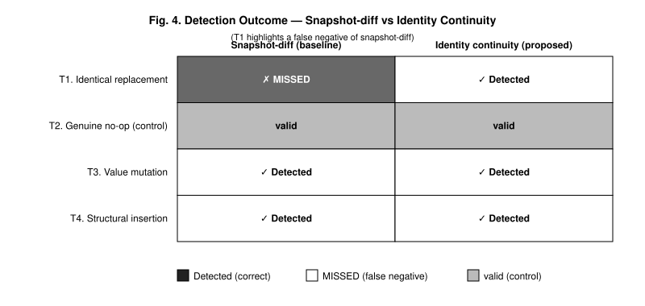
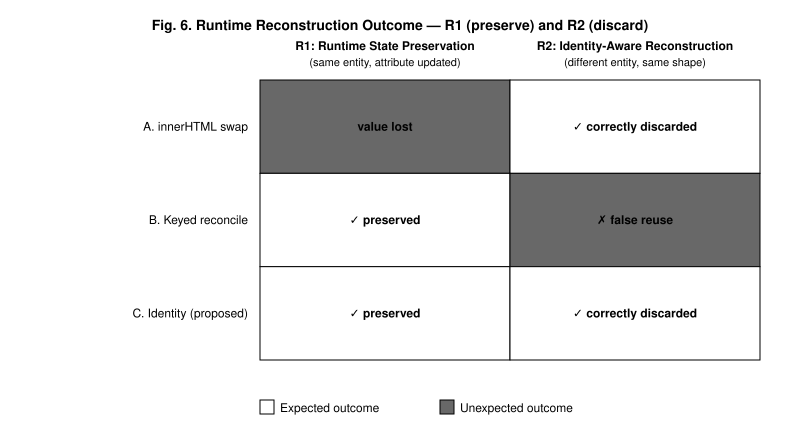

Reference-implementation results for the evaluation (Section 6). Detection outcomes under JSDOM with cross-engine confirmation on Chromium and Firefox. Overhead is reported as the proposed-to-baseline ratio (median with inter-quartile range) measured by paired adjacent windows on Chromium 148, Firefox 150, and JSDOM; because absolute timings are machine-dependent, the ratio and asymptotic order are the claim, not absolute milliseconds.
Scenarios S1–S3 tamper with a property alone; S4 additionally forges the in-DOM <meta> that the baseline uses as its reference. The two models diverge exactly on the evasion scenario.
| Scenario | Attack | Baseline (in-DOM meta) | Proposed (registry) |
|---|---|---|---|
| S1 input.value | direct value forgery | Detected | Detected |
| S2 checkbox.checked | direct forgery | Detected | Detected |
| S3 textarea.value | direct forgery | Detected | Detected |
| S4-a value + meta | co-forgery (evasion) | Bypassed | Detected |
| S4-b checked + meta | co-forgery (evasion) | Bypassed | Detected |
| S4-c textarea + meta | co-forgery (evasion) | Bypassed | Detected |
T1 is an identical-form replacement (stale-subtree): an existing input node is removed and replaced by a new node of identical tag and value. The snapshot baseline sees no difference; the identity model detects the broken binding.
| Scenario | Snapshot-diff | Identity continuity (proposed) |
|---|---|---|
| T1 identical-form replacement (stale-subtree) | Missed | Detected |
| T2 genuine no-op (control) | not flagged | not flagged |
| T3 value mutation | Detected | Detected |
| T4 unauthorized structural insertion | Detected | Detected |

R1 requires runtime state preservation across reconstruction; R2 requires that a new authority-issued identity discards stale state. Only identity reconciliation satisfies both.
| Model | R1 — state preservation | R2 — identity-aware | Combined |
|---|---|---|---|
| innerHTML swap | Lost | Correctly discarded | R2 only |
| keyed reconcile | Preserved | False reuse | R1 only |
| identity reconciliation (proposed) | Preserved | Correctly discarded | R1 + R2 |

The S4 evasion and T1 stale-subtree cases reproduce identically on two real engines. Engine versions are captured at run time.
| Scenario | Expected | Chromium 148.0.7778.96 | Firefox 150.0.2 |
|---|---|---|---|
| S4 evasion forgery (value + meta) | Detected | Detected | Detected |
| T1 identical-form replacement | Detected | Detected | Detected |
| control (valid state) | not detected | not detected | not detected |
Ratio of the proposed model to its baseline, measured by paired adjacent performance.now() windows (30 windows × 10 runs; Case 4 reconstruction 15 × 5) and aggregated as the median with inter-quartile range. A ratio below 1 favors the proposed model. Absolute milliseconds are machine-dependent and are recorded only in the JSON under each results/ folder.
| nodes | Chromium 148 | Firefox 150 | JSDOM |
|---|---|---|---|
| 500 | 0.667 [0.663, 0.668] | 0.750 [0.750, 0.750] | 0.307 [0.307, 0.308] |
| 1000 | 0.683 [0.681, 0.685] | 0.750 [0.750, 0.750] | 0.306 [0.301, 0.309] |
| 2000 | 0.702 [0.700, 0.704] | 0.469 [0.467, 0.472] | 0.239 [0.234, 0.245] |
Proposed validates faster than the baseline on every engine across the measured range, both at the same O(N) order.
| nodes | Chromium 148 | Firefox 150 | JSDOM |
|---|---|---|---|
| 500 | 1.036 [1.034, 1.043] | 1.000 [1.000, 1.000] | 0.939 [0.938, 0.942] |
| 1000 | 1.057 [1.052, 1.064] | 1.000 [1.000, 1.025] | 1.088 [1.087, 1.090] |
| 2000 | 1.108 [1.106, 1.113] | 1.000 [1.000, 1.057] | 0.811 [0.810, 0.813] |
Same order as the snapshot baseline (within about 11% of unity on both production engines), while additionally detecting the T1 stale-subtree case the baseline misses.
| nodes | Chromium 148 | Firefox 150 | JSDOM |
|---|---|---|---|
| 500 | 0.980 [0.964, 0.982] | 0.889 [0.857, 0.889] | 1.026 [1.025, 1.050] |
| 1000 | 0.972 [0.940, 0.980] | 0.889 [0.889, 0.900] | 1.041 [1.036, 1.078] |
| 2000 | 0.981 [0.980, 1.001] | 0.875 [0.875, 0.889] | 1.030 [0.997, 1.047] |
Same order as keyed reconcile (within about 12% of unity on both production engines).
| nodes | innerHTML (bytes) | keyed (bytes) | identity (bytes) | identity vs keyed |
|---|---|---|---|---|
| 500 | 30,280 | 57,684 | 57,184 | −0.87% |
| 1000 | 60,780 | 115,684 | 114,684 | −0.86% |
| 2000 | 123,780 | 234,684 | 232,684 | −0.85% |
Serialized byte length is deterministic and identical across all three environments; identity and keyed encodings differ by under 1%.